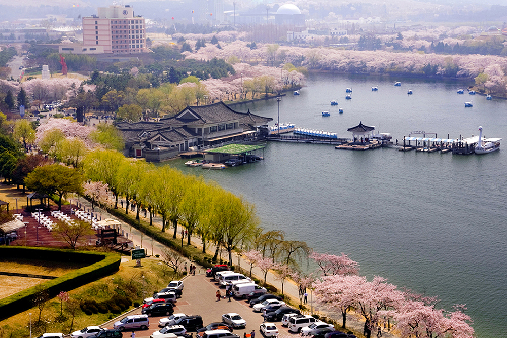

보문관광단지는 경주의 대표적인 관광지로 경주세계문화엑스포, 대중음악박물관, 테디베어박물관 등 다양한 볼거리를 가진 관광단지입니다. 이외에도 힐튼호텔, 라한호텔 등 다양한 숙박시설이 있습니다.  본 사진은 출처는 경북나드리(tour.gb.com)에 있습니다.
봄에는 아름다운 벚꽃으로 관광단지가 가득차고, 여름에는 호수의 시원한 바람으로, 가을에는 아름다운 단풍들이 있으며, 겨울에는 겨울 호수 전경을 즐길 수 있습니다. 짚라인 등 다양한 관광콘텐츠들을 지속 개발할 예정입니다.